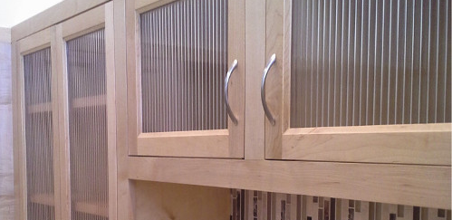

Some of our favorite projects
Finally, a place to put everything
Won't it be nice to get all that stuff off the counter?
See more...
Happy Wife, Happy Life

For their twenty-fifth anniversary, one of our clients gave his wife the custom kitchen of her dreams.
See more...
Small spaces reimagined, re-created

Custom built-in closets provide more storage by effectively repurposing nonstandard, unused, or awkward spaces.
See more...
Attic Conversion
Rather than subdivide an existing bedroom to make room for their growing family, one Chicago couple decided to convert unused space in the attic.
See more...